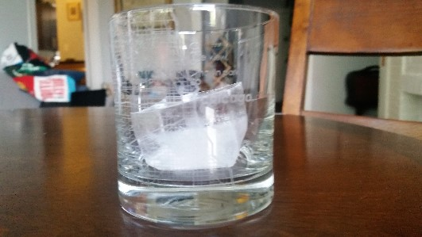
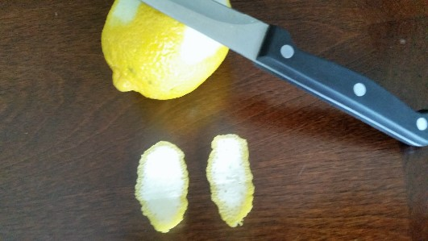

Making a simple syrup is extremely easy: simple add sugar and water to a pot in a 1:1 ratio and place over medium heat on your stove, then stir. Once the sugar is completely dissolved, remove the pot from the heat and let it cool. That's it, you just made simple syrup. Check out the video below to see this process in action:
Add the following to a cocktail shaker:
Use a bar spoon if you have one, otherwise any spoon should be fine
Since you haven't muddled any ingredients, you don't need to use a strainer. Also, a quick note about glassware: different cocktails are meant to be served in specific glasses. An Old Fashioned is actually served in a glass named after itself, an "Old Fashioned Glass." These are also sometimes referred to as a "Rocks Glass" ("rocks" of course being bar slang for ice).
This also largely comes down to personal preference. Many people, especially those trying their first Old Fashioned, will find it easier to drink the cocktail with ice, as the cold will help cut down on the "bite" of the whiskey. The risk, however, is that if the cocktail isn't consumed quickly enough, the ice will melt and the drink will become watered down, losing much of its robust flavor.
Use a twist of orange for a bourbon Old Fashioned and a twist of lemon for rye Old Fashioned. You can use a small knife or a vegetable peeler to cut your twist, but be very careful not to cut yourself. Always remember to cut away from your body in case your hand slips! Your goal when cutting a twist of citrus is to leave off as much of the pith (the white substance under the skin) as possible, as it can negatively impact the flavor of the drink. Once you have your slice, hold it over your glass with the inside of the skin facing down, and twist it to express the oils onto the surface of your drink. You should see the oils floating on the top of your cocktail when you're done. Finally, rub the peel around the edge of the glass to impart a little extra flavor, and drop the twist into your cocktail.
